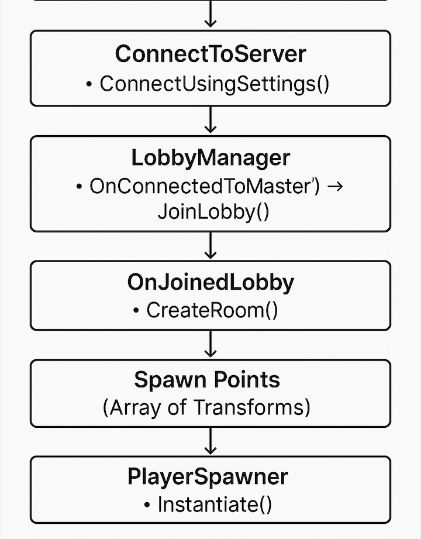

Connected Games Development
K2457766
My Time Plan as A game programmer for first 6 weeks
| Week |
Task |
Details |
| 1 |
Setup & Environment Configuration |
Install Unity, GitHub, and VS Code. Set up Git repository, project structure, and version control. |
| 2 |
Server Setup & Networking Framework |
Choose and set up the multiplayer framework (Photon, Mirror for Unity). Configure server environment. |
| 3 |
Connecting to the Server implementation |
Initialize the player connecting to the server through Unity. |
| 4 |
Implementing lobby joining system & room creation |
Joining lobby in a multiplayer server environment. |
| 5 |
Implementing Room panel system |
Enabling players to create and join rooms. |
| 6 |
Implementing Character Selection |
Enabling players to choose their preferred characters. |
`supershash1304 authored on Feb 3`
Blog 1
Week 1-2
Choosing the Right Unity Version:
Unity is my engine of choice because of its versatility. But picking the right version is
important as I have to adjust it as per my teammates. I installed it via the Unity Hub,
which makes managing different projects and versions easier.
Setting Up My Development Environment:
Once Unity was installed, I needed the right tools:
Visual Studio Code: For C# scripting on my MacBook Air
Cause Visual Studio isn't supported on Mac Anymore 😑.
Git: For uploading data files, codes, and game programming blogs.
Dividing Work:
As a programmer, I am collaborating with my teammate to divide the work.
Dividing the work into 2 parts
1) Multiplayer Server Creation & Server side Implementation
2) Game Physics and Logic
Also Choosing the work both the programmers are comfortable to do.
I wanted to do something i ve not done before which is Multiplayer server implementation.
Like to Challenge myself !!!! 😇
Images
Setup for Unity and Git


Setting up the Photon Unity networking:
Steps:
1) Using the Unity Package manager to install the photon networking services.
2) Setting up a server on Photon Unity Networking website.
3) Adding the App ID from the created website to Unity for integrating the project with the server.
Images
PUN Setup

Comment : PUN was setup correctly with no hiccups and I m excited to take off !!
`supershash1304 authored on Mar 2`
Blog 2
Week 3-4
Taking upon the server-side implementation task:
Creating a scene in Unity for player connections page.
Username Input:
The script retrieves the username from a TMP_InputField and
assigns it to PhotonNetwork.NickName when the "Connect" button is clicked.
Connection to Photon Server:
Upon clicking the "Connect" button, the script initiates a connection to the Photon
server using PhotonNetwork.ConnectUsingSettings() and updates the button text to "connecting...".
Scene Transition on Connection:
Once the connection to the Photon master server is established,
(OnConnectedToMaster callback), the script automatically loads the "Lobby" scene.
Images
Connect to Server Scene/p>

Following is the Connect to Server Logic code Snippet
Images
Connect to Server logic

Created A lobbyManager Script to Incorporate the lobby Panel and Room panel with other functionalities.
Creation process of lobby panel:
Creating a scene in Unity to initialize the Lobby and Room panels.
1. Created a UI Panel named LobbyPanel to serve as the main multiplayer lobby screen.
2. Added a TMP_InputField for users to type the room name before creating it.
3. Placed a "Create Room" Button that calls the OnClickCreate() Method.
4. Included a Scroll View to list all available rooms using a vertical layout.
5. Used a RoomItem prefab to visually represent each room in the room list.
6. Connected the lobby panel to Photon callbacks to update the room list in real-time.
Images
Lobby Panel

Following is the Lobby Panel Logic code Snippet
Images
Lobby panel logic

Comment: Work until now was Smooth with a few issues but fixed them , next i will implement the room panel in lobby manager.
`supershash1304 authored on Mar 25`
Blog 3
Week 5-6
Creation process of Room panel & Character selection:
1. Created a RoomPanel UI with player list display and a "Leave Room" button.
2. Added a TMP_Text to show the current room name.
3. Used a Scroll View to display player items in the room.
4. Instantiated PlayerItem prefabs to show each player's name and avatar.
5. Enabled the Play button for the MasterClient when at least one player is present.
Images
Room Panel

Following are some of the important code snippets from the lobby manager script for the room panel
The Above image explains that the room panel
1) Handles player entry and exit using OnPlayerEnteredRoom and OnPlayerLeftRoom, logging names and updating the player list.
2) Updating the room list when changes occur using OnRoomListUpdate.
3) Keeps the lobby UI in sync with real-time player and room data in Photon multiplayer.
The Above image explains that the room panel
1) Clears the existing room UI by destroying all RoomItem game objects and clearing the list.
2) Instantiates new RoomItem prefabs for each updated room in the Photon room list.
3) Sets room names, assigns the manager reference, and adds each new item to roomItemsList.
The Above image explains that the room panel
1) WaitAndJoinRoom waits until the player is connected and in the lobby before joining the specified room.
2) OnClickLeaveRoom is called when the player chooses to leave the current room using PhotonNetwork.LeaveRoom().
3) OnLeftRoom handles cleanup by hiding the room panel, showing the lobby panel, and clearing all player UI elements.
Room panel:
1. Displayed a PlayerItem prefab for each player in the room panel UI.
2. Included left and right arrow buttons on each PlayerItem to cycle through avatars.
3. Stored the selected avatar index in Photon player custom properties.
4. Synced avatar changes across all clients using OnPlayerPropertiesUpdate().
5. Updated the avatar image on each PlayerItem based on the selected index.
Images
Avatar Selection

Methodologies of Avatar selection And Script
Photon Custom Properties
Each player has a playerAvatar index stored in Photon’s CustomProperties, which is automatically
synchronized across all clients in the room.
UI-Based Selection with Arrows
Players can click left/right arrow buttons to cycle through available avatar sprites. These inputs update their
playerAvatar index and immediately broadcast the change.
Real-Time Synchronization
Photon invokes OnPlayerPropertiesUpdate, which triggers the UpdatePlayerItem method to update each
player's UI with their newly selected avatar.
Visual Display in Room UI
The selected avatar (a sprite from a predefined list) is visually shown next to the player’s name in the lobby
room panel, providing clear feedback to all players.
After Avatar Selection only the Host of the room can Start the game
The Final look at LobbyManager Properties is depicted in the following Image:
Comment:Work Until now has been a bit challenging as the Concepts of Photon networking are quiet new to me .
Also A quick note , Its week 6 and I havent recieved any design details from the designers.
Next I will implement the Player Spawner and SpawnPoints in the game scene , instantiating the players from the lobby.
My Time Plan as A game programmer for next 6 weeks
| Week |
Task |
Details |
| 7 |
Player Spawner and SpawnPoints |
Created SpawnPoints to Spawn Players in the game scene and Player Spawner script |
| 8 |
GIT MERGING OF PROGRAMMER'S work |
Pulling the latest changes, switching to the target branch, and executing a Git merge and Fixing conflicts |
| 9 |
Modifying InGame Player,AI,Weapon,Enemy & Boss scripts |
Changing InGame Player,AI,Weapon,Enemy & Boss scripts created by the second programmer to be multiplayer and Photon ready |
| 10 |
Death Scene & Win Scene |
Creating the Death Scene & Win Scene On what Happens when Player wins or Loses |
| 11 |
Sound Implementation |
Implementing Sound design |
| 12 |
Initial Playtesting |
After completion and integration of all scene doing an initial playtesting |
`supershash1304 authored on Apr 2`
Blog 4
Week 7-8
Week 7
MAP DESIGN AND UI DESIGNS STILL NOT PROVIDED BY THE DESIGN TEAM😔
Implementing the Player Spawner and SpawnPoints in the Game Scene
Spawn Points Setup
Multiple Transform points were placed in the scene to represent potential player spawn locations.
These were assigned to the PlayerSpawner script via the Unity Inspector for dynamic random selection.
Prefab Usage
The player character (X Bot) was converted into a prefab and placed in the Resources folder.
This allows runtime instantiation over the network using PhotonNetwork.Instantiate.
Photon Ownership and Network Instantiation
Only the local client executes the instantiation using:
csharp
GameObject player = PhotonNetwork.Instantiate(prefabName, spawnPoint.position, Quaternion.identity);
This ensures each player is only responsible for controlling their own character.
Random Spawn Point Logic
On scene load, a random Transform from the spawnPoints[] array is selected:
int index = Random.Range(0, spawnPoints.Length); Transform spawnPoint = spawnPoints[index];
Camera Follow Setup
The main camera uses a custom CameraFollow script or a Cinemachine FreeLook camera.
Upon instantiation, the camera's follow and look-at targets are set to the spawned player:
cinemachineCam.Follow = player.transform; cinemachineCam.LookAt = player.transform;
Health UI Assignment
Only the local player's health bar UI is assigned,This avoids syncing UI data across the network.
PhotonView Check for Local Control
photonView.IsMine is used to ensure camera assignment and UI logic only run for the local player
Images
Avatar Selection

Week 8
Finally got a Rough Prototype of the map , which is not related to the game theme , also still no updates on any UI and sound design
GIT MERGING:
Sorting Conflicts while Merging both programmer's work (the branches in Github)
Conflicts:
1)Simultaneous edits to the same methods (TakeDamage(), OnTriggerEnter(), [PunRPC] declarations) caused Git conflicts.
2)Identical method names like TakeDamageRPC() appeared in multiple scripts or more than once in a single file.
3)Serialized fields and component references were modified differently across branches, creating clashes in .cs, .prefab, .meta, and .unity files.
4)PhotonView components were assigned differently in each branch, causing mismatches and broken references.
5)Formatting discrepancies (spaces, comments, Debug.Log()) triggered unnecessary merge conflicts.
6)Game logic changes and UI updates weren't in sync, leading to UI elements referencing outdated or unsynced gameplay data.
Issues:
1)Lack of coordination on modifying shared scripts and core gameplay logic.
2)No standard naming or placement conventions for RPC methods, leading to duplication.
3)Serialized Unity files (like prefabs/scenes) are sensitive to even minor changes, and Git can't auto-merge them reliably.
4)Inconsistent PhotonView assignments across branches broke prefab consistency.
5)Different team members had varying coding styles, which Git misread as functional changes.
6)Gameplay updates and UI improvements were developed in parallel without shared state handling or abstraction layers.
How Everything was Fixed:
1)Carefully merged script logic by isolating network-related code inside [PunRPC] methods and guarding them with photonView.IsMine where needed.
2)Unified duplicated methods: e.g., TakeDamageRPC() was defined in only one authoritative script per object type.
3)Manually resolved .cs conflicts, then fixed broken links in Unity Editor for .prefab, .meta, and .unity files.
4)Used UnityYAMLMerge and manually reassigned PhotonView components after the merge to restore prefab integrity.
5)Applied a consistent code formatting standard before merging to reduce formatting-related conflicts.
6)Introduced a layered structure:
Gameplay scripts (e.g., Health.cs, BossAI.cs) own and update the state.
UI scripts (e.g., HealthBarUI.cs) only read and reflect the synced state.
Comment : Work for week 7 Marked major multiplayer Server side work done, Work for week 8 was really challenging dealing with
conflicts and code issues
`supershash1304 authored on Apr 9`
Blog 5
Week 9-10
The second programmer set up the rough map BUT UNFORTUNATELY DID ALL THE SCRIPTING FOR SINGLEPLAYER,
also still no updates on any UI and sound design,
Changing InGame Player, AI, Weapon, Enemy & Boss scripts created by the second programmer to be multiplayer and Photon ready
1. Health.cs (Player)
Original Purpose:
Manages player health, damage, death logic, ragdoll, and updates health bar.
Problems Fixed:
* Death wasn't syncing across players.
* Health bar didn’t visually update.
* Players didn’t see each other die.
Fixes Made:
* Added [PunRPC] public void RPC_TakeDamage(int) to sync damage via Photon.
* Used PhotonView.RPC to broadcast health changes to all players (RpcTarget.AllBuffered).
* Added proper ragdoll and animator disabling inside RPC_TakeDamage.
* OnPhotonSerializeView retained for fallback syncing.
* Health bar UI update only for photonView.IsMine.
2. HealthBarUI.cs (Player Health Bar)
Original Purpose:
Updates the fill amount of player's health bar.
Problems Fixed:
* Health bar didn’t animate or reflect real health.
* Visual stayed full even after death.
Fixes Made:
* Introduced SetHealth(current, max) with animation via Mathf.Lerp.
* Fixed SetMaxHealth() to be properly called and safe from divide-by-zero.
* Updated via Update() method to show smooth visual updates.
3. BossHealth.cs
Original Purpose:
Manages boss HP, handles phase change, and death logic.
Problems Fixed:
* Health didn’t sync across players.
* Multiple players couldn’t damage the boss.
* Death animation not visible across clients.
Fixes Made:
* Made TakeDamageRPC() a [PunRPC] method only callable by MasterClient.
* Added OnPhotonSerializeView for live syncing currentHealth.
* Triggered RPC_BossDeathVisuals via photonView.RPC() to all clients.
* Death trigger added to animator and destroy delayed.
4. BossHealthBarUI.cs
Original Purpose:
Display boss health bar visually using Image Fill.
Problems Fixed:
* Boss HP bar didn’t match across players.
* Didn’t hide after boss death.
Fixes Made:
* Automatically finds boss with tag "Boss" if not assigned.
* Smooth fill amount animation.
* Option to hide bar if boss dies (via callback added to BossHealth or BossSpawner).
5. BossAI.cs
Original Purpose:
Controls movement, attack behavior, and player targeting.
Problems Fixed:
* Boss kept targeting dead players.
* Only MasterClient saw attacks.
* Boss death didn’t stop logic or attacks.
* Only host took damage from boss.
Fixes Made:
* Only PhotonNetwork.IsMasterClient controls logic.
* FindNextAlivePlayer() updated to skip dead players.
* Boss uses PhotonNetwork.Instantiate to spawn projectiles.
* Boss death now calls RPC_BossDie() and disables NavMeshAgent and animation logic.
6. Projectile.cs
Original Purpose:
Shoots forward, detects player on hit.
Problems Fixed:
* Players didn’t take damage.
* Boss projectiles didn’t sync damage properly.
Fixes Made:
* Projectiles apply damage to player via photonView.RPC("RPC_TakeDamage").
* Calls PhotonNetwork.Destroy(gameObject) for cleanup.
* Only runs logic if photonView.IsMine.
7. ProjectileDamage.cs
Original Purpose:
Handles collisions for projectiles.
Problems Fixed:
* Damage not synced to correct target (e.g., Boss or Player).
* Local-only damage.
Fixes Made:
* If hit Player, only the owner processes TakeDamage().
* If hit Boss, sends TakeDamageRPC() to MasterClient.
* Ensured Destroy(gameObject) cleans up after collision.
8. WeaponDamage.cs
Original Purpose:
Melee damage to boss/enemy/player.
Problems Fixed:
* Could damage same target multiple times.
* Didn’t sync properly to target.
Fixes Made:
* Added hasHit check to prevent multiple hits.
* Calls targetView.RPC("RPC_TakeDamage", targetView.Owner) for players.
* Calls TakeDamageRPC() for bosses.
9. PlayerSpawner.cs
Original Purpose:
Spawns local player and camera assignment.
Problems Fixed:
* Didn’t assign health bar properly.
* Camera didn’t follow player consistently.
Fixes Made:
* Loads "X Bot" prefab from Resources.
* Finds and assigns HealthBarUI to local player’s health script.
* Sets camera to follow photonView.IsMine player.
10. FallDetector.cs
Original Purpose:
Kills players who fall below a threshold.
Problems Fixed:
* Used undefined MaxHealth property.
* Didn’t call proper RPC-based damage method.
Fixes Made:
* Replaced health.MaxHealth with health.GetCurrentHealth() or maxHealth.
* Uses health.TakeDamage(9999) to ensure death.
Final Notes:
* Photon RPCs were applied correctly to every remote interaction.
* Only MasterClient can change core game state like boss health.
* All players now see accurate HP values, ragdolls, death, and projectiles.
* Health bars now visually decrease and sync across all clients.
* Death animations now play properly after fixing missing animator triggers.
Week 10
The UI design was provided but unfortunately were literal photos which are not acceptable, this is what they provided :
https://kingstonuniversity-my.sharepoint.com/:f:/g/personal/k2410945_kingston_ac_uk/EhJqOFaK2fxHtOUdhD-jTb4Blwm_jj50tuPe7ldhQDICuw?e=Jpfsq0
still used these photos to be accomodated as background and game name
Images
Avatar Selection

Death & Win Scene Flow Implementation (Multiplayer-Photon)
1. Death Screen Flow
Original Purpose:
Handle local player death by showing a UI, leaving the Photon room, and transitioning back to the lobby.
Flow:
* Each player’s character has a Health.cs script attached.
* When currentHealth drops to 0, isDead is set to true and ragdoll physics are enabled.
* If photonView.IsMine, the DeathScreenUI (tagged "DeathUI") is activated.
* After 5 seconds, PhotonNetwork.LeaveRoom() is called.
* RoomExitHandler.cs listens for OnLeftRoom() and loads "ConnectToServer" scene.
Result:
* Only the dead player exits the room.
* Other players continue playing uninterrupted.
* Transition is smooth and synced.
Images
Avatar Selection
Images
Avatar Selection

2. Win Scene Flow
Original Purpose:
End the game for all players when the boss is defeated and transition them to a shared win screen.
Flow:
* BossHealth.cs manages a shared health pool via PhotonView.
* When health reaches 0, Die() is called.
* All players receive a visual via RPC_BossDeathVisuals().
* Only the MasterClient calls PhotonNetwork.LoadLevel("WinScene").
* PhotonNetwork.AutomaticallySyncScene ensures all clients load the same scene.
* WinSceneHandler.cs waits 3 seconds then loads "ConnectToServer" scene.
Result:
* All players transition together to the WinScene.
* Dedicated win screen is shown.
* Match resets cleanly for a new session.
Images
Avatar Selection
`supershash1304 authored on Apr 22`
Blog 6
Week 11-12
MAP DESIGN AND OTHER DESIGNS STILL NOT PROVIDED
My Time Plan as A game programmer for last 2 weeks
| Week |
Task |
Details |
| 13 |
Code Cleaning |
After initial play testing Cleaning and Trimming the code to be more robust |
| 14 |
Documentation & Video/Gamefile (submission) |
Final Submission process implementation |
`supershash1304 authored on May 5`
Blog 7 (final blog)
Week 13-14
All the commits for dates can be found in the public repository in which I have created this project
the link for the same is This Link to The Git Project